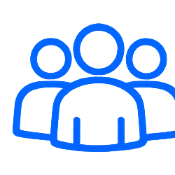
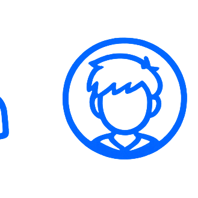
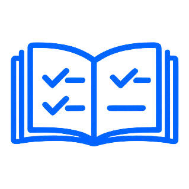
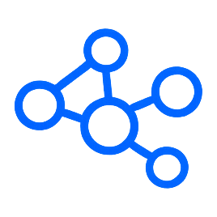
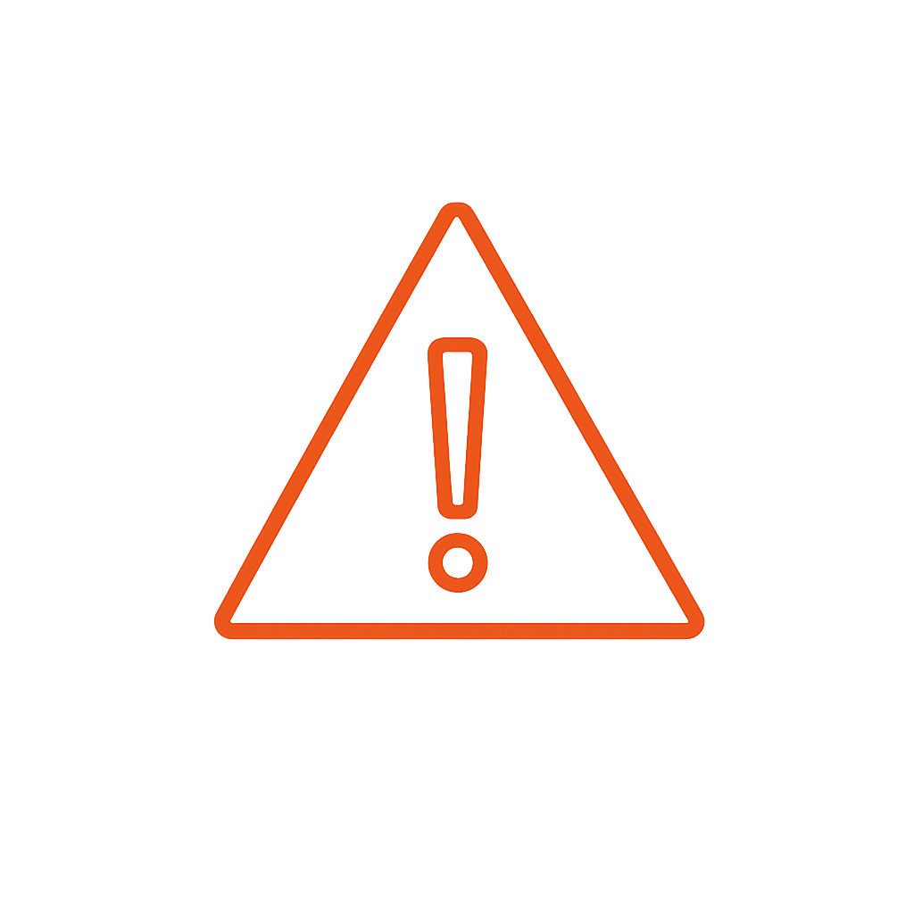

Інженерна школа дронівпід ключ і без бюджету громади
Ми привозимо у вашу громаду інженерну школу безпілотних систем для підлітків 13–17 років: програму, наставників і методику. Громада дає приміщення — ми робимо решту. Найчастіше це коштує вам 0 грн.

Ми будуємо інженерів, а не операторів
~90% курсу — це наука й інженерія. Пілотування — лише 5–10%.
Пілотування — це верхівка айсберга. Під водою — інженерія, фізика, радіозв'язок, хімія акумуляторів і код. Фокус курсу цивільний: агросектор, доставка, пошук і порятунок, екомоніторинг. Це техніка, що рятує врожай, шукає людей і стежить за довкіллям.

Зайняті влітку підлітки. Сучасна громада на мапі.
Літо — місяці, коли підлітки найбільше потребують осмисленого заняття, а громада найменше може його запропонувати. Ми закриваємо цю прогалину технічною освітою рівня, який зазвичай доступний лише у великих містах.

0 грн для громадиНа базі школи або партнерства — найчастіше повністю безкоштовно.

13–17 вік учасниківГрупи по 8–12 осіб для індивідуальної уваги наставника.

8 занять у курсіДва рівні — базовий і поглиблений. Власний проєкт у фіналі.

6 напрямів наукиІнженерія, фізика, радіозв'язок, хімія, код і пілотування — в одній програмі.
Усе для запуску — наше. Від вас — приміщення.
Громаді не потрібно шукати викладачів, купувати обладнання чи писати програму. Ми приїжджаємо з готовим рішенням і всім необхідним.

Громада дає
мінімум — одну позицію
- Приміщення — аудиторія школи, центру дозвілля чи бібліотеки
- Електрика, столи та інтернет
- Безпечний простір для запусків — спортзал чи огороджена ділянка
Ми привозимо
під ключ — усе решта
- Програму курсу — 8 структурованих занять, теорія коротко, практика руками з першого дня
- Наставників — ветерани, інженери та педагоги, що працюють поруч із підлітком за столом
- Методику та супровід — перевірена методика плюс психолого-педагогічний супровід групи
- Обладнання — симулятори, комплекти для збірки FPV, компоненти й інструменти
- 6 напрямів науки — інженерія, фізика, радіозв'язок, хімія акумуляторів, код і пілотування
- Звітність — прозорий звіт громаді за результатами курсу
Найчастіше для громади все на базі школи або партнерства. Вам достатньо дати простір — решту беремо на себе.
Від запиту до першого польоту — три кроки
Жодної бюрократії з боку громади. Ми беремо на себе підготовку, обладнання й проведення — ви бачите кожен крок.

Запит і узгодження
Ви залишаєте запит — ми узгоджуємо дати та формат під вашу громаду: денний курс чи табір, кількість груп, вік учасників.
Беремо на себе: плануванняГромада надає простір
Підійде аудиторія школи, центру дозвілля чи бібліотеки з електрикою і столами, плюс безпечне місце для запусків.
Від громади: приміщенняКурс і перший політ
Ми привозимо наставників, обладнання й програму та проводимо курс. Кожен учасник власноруч складає й запускає апарат.
Беремо на себе: проведенняМи не чекаємо на державу — приходимо й робимо, а ви бачите кожен крок.
Кожна група формується за принципом 50/50 — порівну діти воїнів і цивільних, бо саме так будується міст між людьми в громаді. Команда має ім'я і обличчя: голова, керівник програми, методисти, наставники-ветерани.
Робимо самі — і показуємо як
Після курсу громада отримує зрозумілий звіт про результати. Працюємо відкрито: прозорий кошторис, зрозумілі правила, документальна звітність.
Звіт для громади
Хто навчався, що опанували, які роботи зібрали. Відкрито і документально — придатно для ради чи дирекції школи.
Прозорий кошторис
Видно, що частину статей закриваємо партнерством за 0 грн. Після проєкту — короткий фінансовий звіт: скільки зібрали, на що витратили.
Захист даних
Жодних персональних даних неповнолітніх у публічному доступі. Згоди на фото — загальні кадри.
Безпека на практиці
Інструктажі, засоби індивідуального захисту, координатор з безпеки, аптечка й чіткий протокол дій на випадок інциденту.
Команда з обличчям
Голова проєкту, автор програми, методисти та наставники-ветерани. Імена й ролі — відкрито.
Гурток → курс → табір → мережа громад
Етап 1
Гурток
Запуск на базі школи як факультатив — мінімальний поріг входу для громади.
Етап 2
Базовий курс
8 занять, кожен учасник власноруч складає й запускає навчальний апарат.
Етап 3
Табір
Поглиблені модулі: агро, пошук і порятунок, екомоніторинг.
Горизонт
Мережа
Розширення на сусідні громади й мережа наставників, зокрема ветеранів.
Привезімо інженерну школу у вашу громаду
Залиште запит — ми зв'яжемося, узгодимо дати й формат і надішлемо детальну презентацію для ради чи дирекції школи. Від вас потрібне лише приміщення. Усе інше — наше.